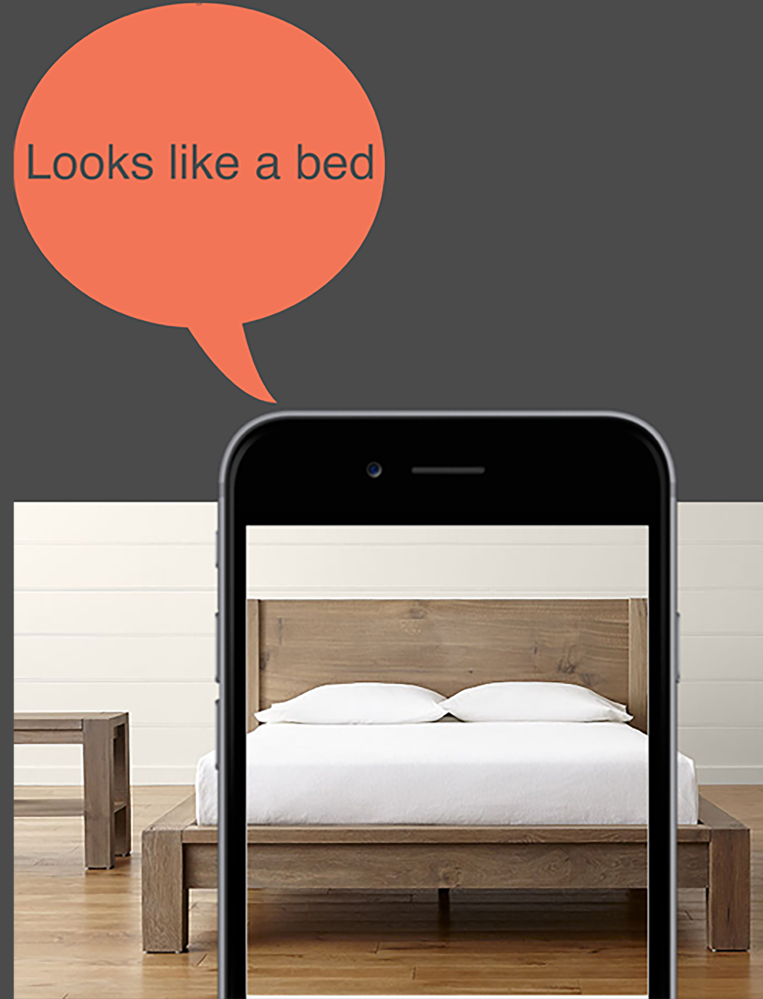

As we enter a more digital focused era visually impaired people are often a second thought, we try to adapt digital spaces as much as possible to them but it seems technology often creates more barriers in their lives taking away independence, independence which in some cases is very little, for example, not able to see where you put your fork or book, not knowing who is coming towards you, having to guess or wait until they speak and not being able to read small print such as books or use by dates on food. All of these issues could be addressed using technology.
As full sighted people, we often take for the advantage the ease that sight brings to our lives, from enjoying the view outside our bedroom window, knowing what breed of dog is in front of us to sensing social cues through body language such as smiling or frowning. However, for blind people they have no such advantages, they cannot preserve the world around them via sight. That is my mobile application Sight comes in. It will allow a user to navigate their environment helping them find, objects they are looking for without assistance from another person, helping them identify close family and friends and even read.